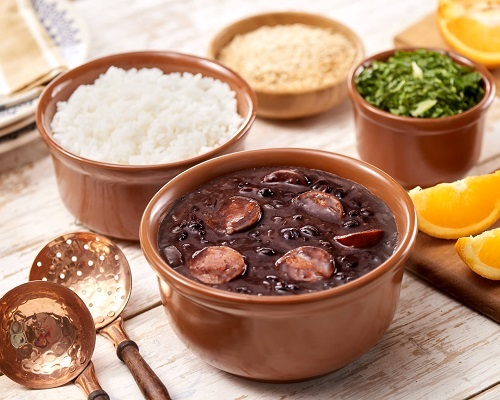

Para evitar o alto desperdício de alimento e seu indevido descarte, ensinamos formas de utiliza-los! Segue uma lista com as 3 receitas brasileiras mais famosas e pesquisadas.
| paçoca de amendoim |
Ingredientes
- 1/2 kg de amendoim torrado, sem sal e sem pele - Duas xícaras de açúcar - Meia xícara de farinho de milho amarela - Uma colher de café de sal |
Modo de preparo
Pegue o amendoim torrado, o açúcar, a farinha de milho e o sal, coloque-os em um triturador ou liquidificador. Processe até fiquem bem triturados e homogêneos. Pegue forminhas de sua preferência e coloque a mistura, socando com as mãos e modelando. Desenforme e está pronto para consumir. |

|
| pão de queijo |
Ingredientes
- 4 copos (americanos) de polvilho doce (500 g) - 1 colher (sopa) tempero ou sal a gosto - 2 copos (americano) de leite (300 ml) - 1 copo (americano) de óleo (150 ml) - 2 ovos grandes ou 3 pequenos - 4 copos (americano) de queijo minas meia cura ralado - óleo para untar |
Modo de preparo
Coloque o polvilho em uma tigela grande e reserve. Aqueça o sal, o leite e o óleo e quando essa mistura ferver, a use para escaldar o polvilho , mexa muito bem para desfazer pelotinhas. Deixe esfriar. Acrescente os ovos, um a um, alternando com o queijo e sovando bem após cada adição. Unte as mãos com óleo, se necessário. Enrole bolinhos de 2 cm de diâmetro e coloque-os em uma assadeira untada. Leve ao forno médio (180º C), preaquecido. Asse até os pão de queijos ficarem douradinhos. |

|
| feijoada |
Ingredientes
- 1 Kg de feijão preto - 100 g de carne seca - 70 g de orelha de porco - 70 g de rabo de porco - 70 g de pé de porco - 100 g de costelinha de porco - 50 g de lombo de porco - 100 g de paio - 150 g de linguiça portuguesa |
Modo de preparo
Coloque as carnes de molho por 36 horas ou mais, vá trocando a água várias vezes, se for ambiente quente ou verão, coloque gelo por cima ou em camadas frias.Coloque para cozinhar passo a passo: as carnes duras, em seguida as carnes moles. Quando estiver mole coloque o feijão, e retire as carnes. Finalmente tempere o feijão. Acompanhamentos Couve, arroz branco, laranja, bistecas, farofa, quibebe de abóbora, baião de dois, bacon e torresmo. |
 |